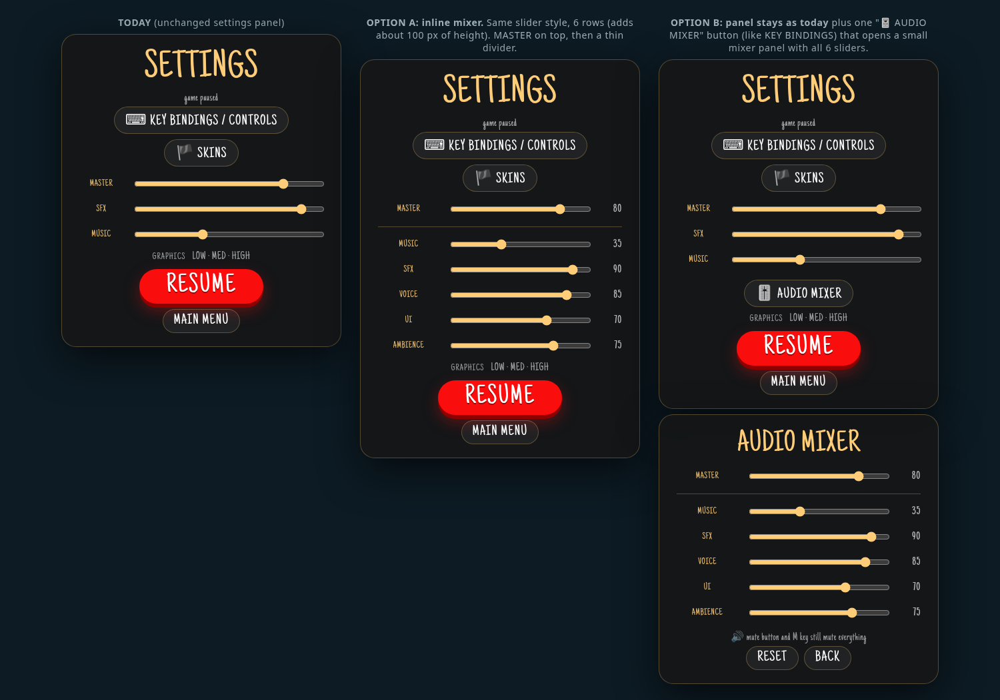

| OLD → NEW → OLD → NEW · single gun A/B | |
| OLD 4-gun → NEW 4-gun broadside, played twice A/B |
| Reel: 4 variants → 6-gun broadside → mid + far NEW | |
| Variant 1 / 2 | |
| Variant 3 / 4 |
| In context: callouts over a broadside at sea NEW | |
| Full reel (every take) | |
| "Arrr!" · male (4 takes) | |
| "Arrr! / Yarrr!" · female (4 takes) | |
| "Fire!" · male (3 takes) | |
| "Fire!" · female (3 takes) | |
| "Ahoy!" / "Land ahoy!" · male (4) | |
| "Me matey!" · female (1) | |
| "Land ho!" · male (2) | |
| "Yaargh!" · male (1) | |
| Taunts · male: Scallywag! / Walk the plank! / Arr, matey! | |
| Taunts · female: Walk the plank! / Come and get me! / Take this! | |
| Laughs · male (2) | |
| Laughs · female (3) |
